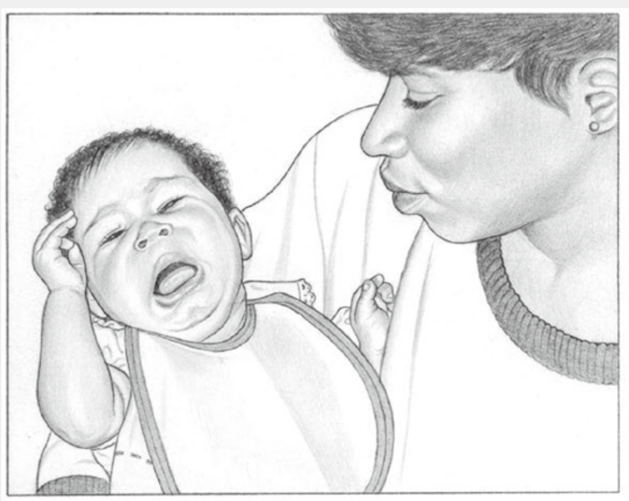
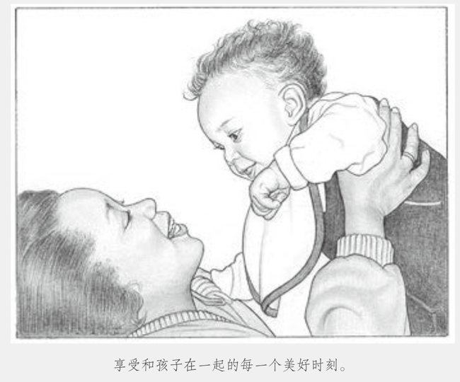

新生儿哭闹不止怎么办？
来源：《美国儿科学会育儿百科》
婴儿哭闹很常见，因为哭对婴儿有多重实用意义：感到饥饿或不适时，哭可以帮他寻求帮助；可以帮他舒缓过于强烈的视觉、听觉和其他感官刺激带来的不适；还可以帮他减压。
你可能发现孩子有一段时间比较烦躁，这既不是因为肚子饿，也不像是因为身体不舒服或疲倦。在此期间似乎什么都无法让他安静下来，但这一阶段过去后，孩子可能看起来更加精神，而且之后很快进入睡眠并且比平时睡得更沉。这种哭闹似乎是在帮助婴儿消耗过剩的精力，好让他恢复安逸的状态。等你逐渐熟悉孩子的哭声，你很可能发现不同的哭声代表不同的需求：饿了、生气了、难过了、哪里疼了或者困了。每个婴儿都会用不同的哭声来表达不同的需求。
有时几种不同类型的哭声会相互重叠。孩子刚睡醒时常常觉得饥肠辘辘，于是用哭泣索求食物。假如你没有迅速回应，饥饿的哭泣就有可能变成愤怒的号啕大哭——你可以听出哭声的变化。随着他渐渐长大，他的哭声变得更有力、更响亮、持续时间更长，还会有更多变化来表达不同的需求和想法。在婴儿出生后的几个月里，解决哭闹问题的最好办法是迅速回应。这么小的孩子是不会被宠坏的，你应给予关注。如果你对他的求助信号及时回应，他就不会哭那么久。

几种安抚方式
回应孩子的哭闹时，你首先应满足他最迫切的需求。如果他又冷又饿，尿片也湿透了，你就应该先帮他保暖，再换尿片，最后喂奶。假如哭声听起来有点儿尖利或惊恐，你就应考虑是不是衣物或其他东西让他感觉不舒服，或者头发缠住了他的手指或脚趾。
如果孩子不冷、肚子不饿、尿片干爽，但他还是哭个不停，你可以尝试下列安抚方法并找出他最喜欢的。
■ 把他放进摇篮里或抱在怀里轻轻摇。
■ 轻轻地抚摸他的头或者轻拍他的后背或前胸。
■ 在保证安全的情况下，打个襁褓（用婴儿抱毯将他裹起来）。
■ 唱歌或跟他讲话。
■ 播放轻柔的音乐。
■ 抱着他走动，或用婴儿手推车、伞车等推着他四处走走。
■ 播放有节奏的白噪声和振动声。
■ 给他拍嗝，帮他排出肚子里的气。
■ 洗热水澡（大多数婴儿喜欢，但并非都喜欢）。
假如这些全都不管用
有时最好的处理方法就是让他独处一会儿。
你要把他放在安全的地方，比如说婴儿床上。
很多婴儿不哭一哭就睡不着，让他哭一会儿，他反而可以更快入睡。
如果婴儿确实因为累得很想睡才哭闹，那么哭闹通常不会持续很久。
不停的哭且声嘶力竭(可能是肠痉挛)
如果他不但没有停止哭闹，而且哭得声嘶力竭、不分昼夜，那么他可能患了肠痉挛。
遗憾的是，目前关于肠痉挛的发病原因，还没有明确的解释。
通常来说，婴儿对外界刺激异常敏感或者神经系统无法自我调节，便会出现肠痉挛的情况。
随着婴儿一天天长大，这种无法自我调节的情况（主要表现为不停哭闹）将得到改善。
对母乳喂养的婴儿来说，有时肠痉挛意味着婴儿对母亲吃的某种食物不适应。
缓解肠痉挛的滴剂比较贵，而且研究表明它并没有效果。
还有更多的非药物治疗方法可供你选择，比如改善你的饮食，放慢哺乳节奏，适当地给他拍嗝，等等。
可能生病了
假如孩子怎么都无法安静下来，那他可能是生病了。
给他测量体温（见“测量直肠温度”），如果直肠温度为38℃或更高，那他有可能感染了病菌，应立刻就医。
你自己越放松，你的孩子就越容易哄。
即使很小的婴儿也会对周围的紧张气氛很敏感，而他们的回应方式就是哭。
听着婴儿不停哭闹会令人烦躁，但因沮丧而恼怒或慌乱只会让婴儿哭得更厉害。
你如果开始产生无法控制局面的感觉，就应把孩子安置在安全的地方，然后向其他家庭成员或朋友求助。
这样不仅可以让你喘口气，而且换一张新面孔有时更容易让这个令你无计可施的小家伙安静下来。
谨记一点，你不论多么不耐烦、多么恼火，都绝对不能大力摇晃和打孩子。
大力摇晃可导致婴儿失明、大脑受损，甚至死亡。一定要把这个信息转告给所有看护孩子的人，包括你的伴侣和保姆。
此外，不要因为孩子的哭闹有心理负担。
孩子哭闹并不是因为你不是好父母，也不是因为他不喜欢你。
每个婴儿都会哭，而且时常找不到明显的原因。
新生儿每天平均要哭1～4小时，这是他适应子宫外这个对他来说很奇怪的新世界的方式。
没有父母可以保证每次都能哄好哭闹的婴儿，所以你不要对自己要求过高。
你能做的是试着用现实可行的办法，寻求他人的帮助，好好休息，然后享受和孩子在一起的美好时刻。
